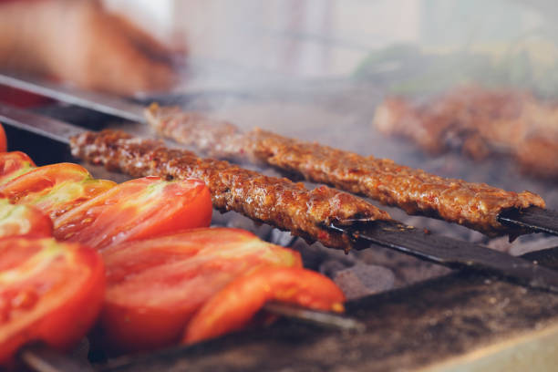
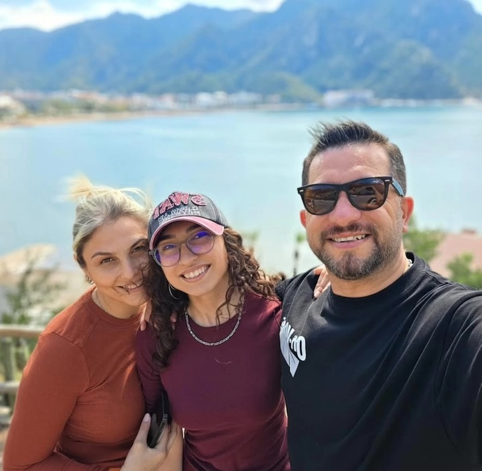
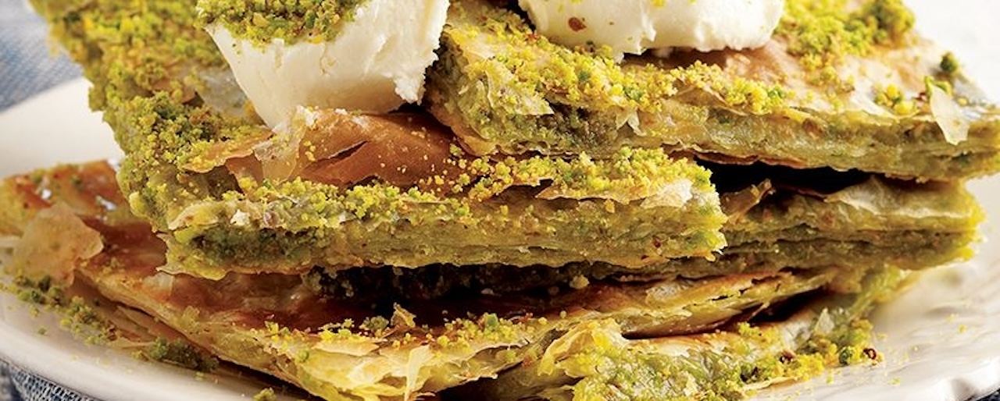
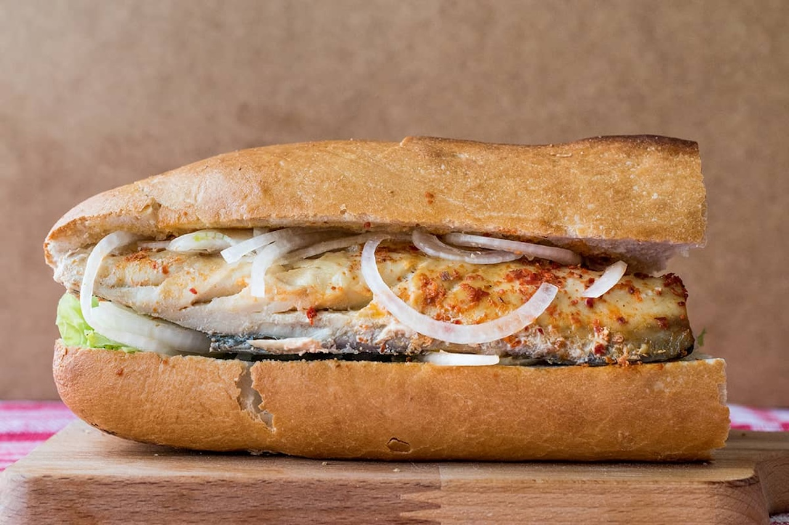
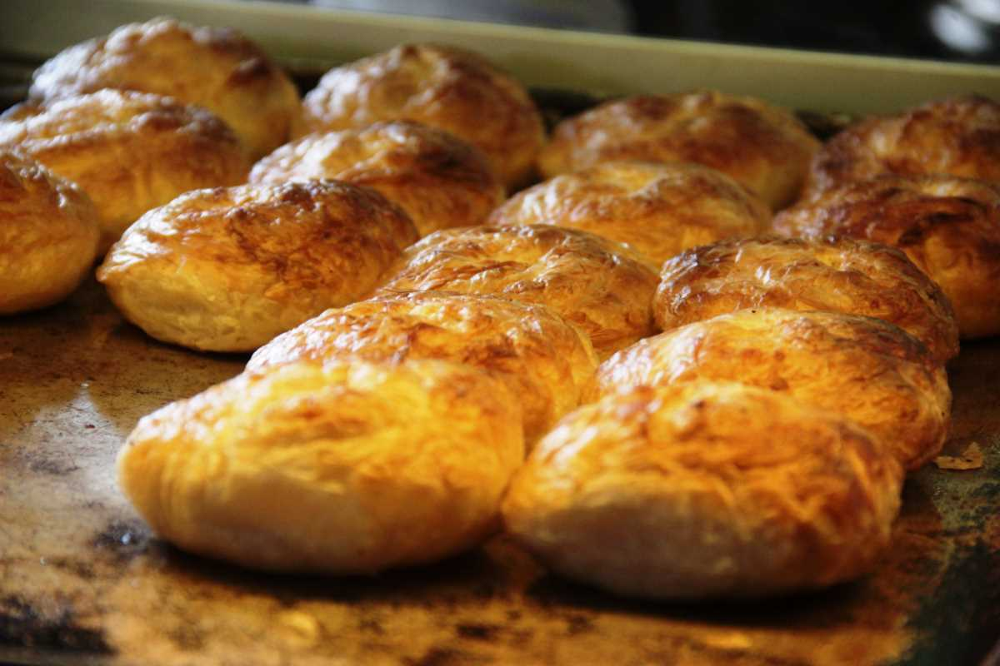

🍽️ Gastronomi • Seyahat • Keşif
Türkiye'nin Lezzet Haritasını Birlikte Keşfediyoruz
Biz Eray ve Mevsim. Türkiye'nin dört bir yanında restoranları, kafeleri, yöresel lezzetleri ve dünya mutfağını keşfediyor, gerçek deneyimlerimizi sizlerle paylaşıyoruz.

100+
Restoran40+
Şehir500+
Lezzet100K+
Takipçi Hedefi
Hikayemiz
Biz Kimiz?
Bir Lokma Daha, Eray ve Mevsim'in Türkiye'nin dört bir yanında lezzet keşifleri yapmak için çıktığı gastronomi yolculuğudur.

Her Lokmanın Bir Hikayesi Vardır.
Yeni açılan restoranlardan yıllardır hizmet veren esnaf lokantalarına kadar birçok mekanı ziyaret ediyoruz.
Amacımız sadece güzel görünen yemekleri paylaşmak değil; hizmet kalitesini, fiyat performansını, ortamı ve gerçek deneyimlerimizi takipçilerimize aktarmak.
Gerçek Deneyimler
Tarafsız Yorumlar
Yeni Mekan Keşifleri
Türkiye'nin Lezzet Rotası
Keşifler
Neler Keşfediyoruz?
Restoranlar
Şehrin en popüler ve en özel restoranlarını ziyaret ediyoruz.
Kafeler
Butik kahvecilerden manzaralı kafelere kadar yeni mekanları keşfediyoruz.
Dünya Mutfağı
Farklı ülkelerin mutfaklarını deneyimleyerek sizlere aktarıyoruz.
Yöresel Lezzetler
Türkiye'nin unutulmaya yüz tutmuş eşsiz tatlarını keşfediyoruz.
Lezzet Rotaları
Öne Çıkan Şehirler



Yeni İçerikler
Son Keşiflerimiz

Adana'nın En İyi Kebapçısı?
Gerçek deneyimimiz ve puanlamamız.

İstanbul'da Kahvaltı
Boğaz manzarasında unutulmaz bir deneyim.

Gaziantep Lezzet Turu
Katmer, baklava ve kebap bir arada.
Sosyal Medya
Lezzet Yolculuğumuza Katılın
Yeni restoranlar, kafeler ve eşsiz lezzetler için bizi sosyal medya hesaplarımızdan takip edin.
İletişim
Bize Ulaşın
@birlokmadaha01
YouTube
@birlokmadaha01
+90 538 843 92 92
E-posta
birlokmadaha@outlook.com.tr